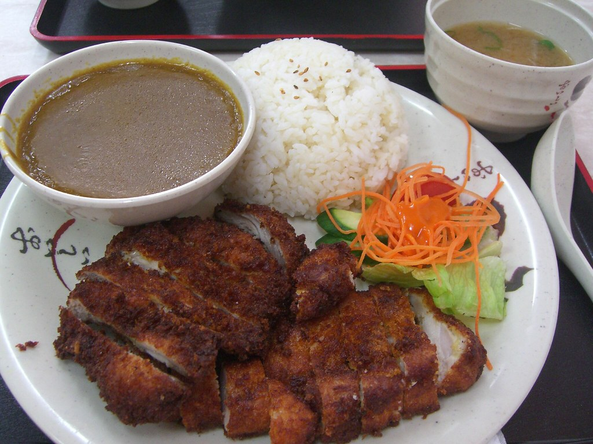

Photo by
avlxyz
on Flickr
Description
A comforting Japanese classic: crispy panko-breaded chicken cutlets served
with a rich, mildly sweet curry sauce over steaming rice. Crunch + cozy
curry = perfection.
Ingredients
Chicken Katsu
- 2 chicken breasts (butterflied & pounded thin)
- Salt & pepper
- 1 cup flour
- 2 beaten eggs
- 1.5 cups panko breadcrumbs
- Oil for frying
Curry Sauce
- 1 onion (sliced)
- 2 carrots (chopped)
- 2 cups chicken stock
- 1 tbsp curry powder
- 2 blocks Japanese curry roux (Golden Curry or similar)
- 1 tbsp soy sauce
To Serve
Steps
- Season chicken with salt & pepper.
- Coat in flour → dip in egg → coat in panko.
-
Heat oil and fry chicken until golden & crisp. Slice into strips.
- In a pot sauté onion, then add carrots & potatoes.
- Add stock, simmer until veggies soften.
- Stir in curry roux & soy sauce until thickened.
- Serve rice → place chicken → ladle curry on top.